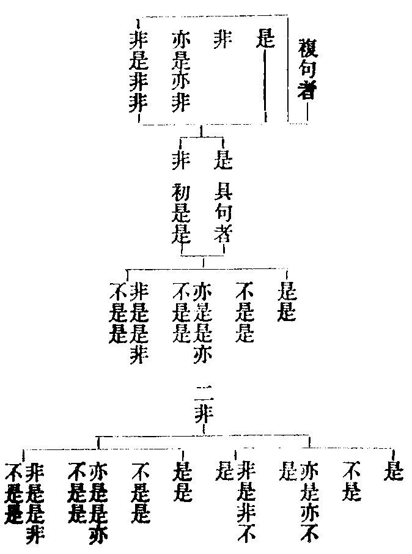
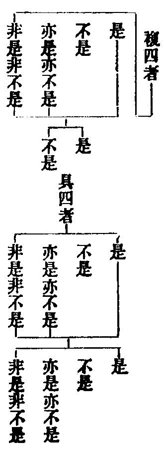
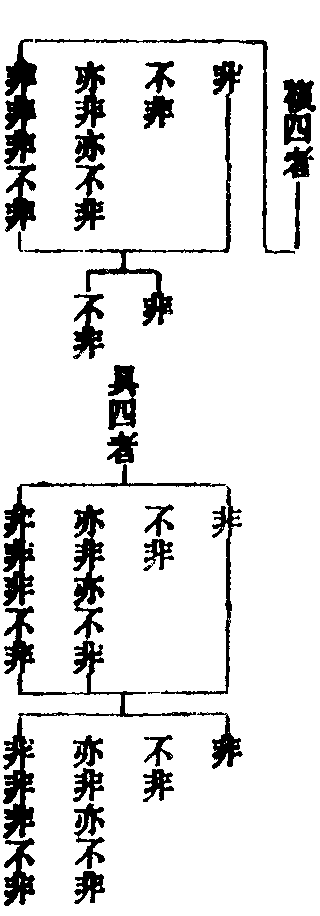

涅槃經疏三德指歸卷第六
河西下示今正解興皇既斥諍於問數疏主前文亦云增減在人然至當歸一精義無二河西分問符順答文擇善從之故今承用疏主前後釋義多許河西於破古中凡至興皇破必悉委良由興皇立義最勝故也但破勝者劣者望風河西身預譯場親咨無讖分經對義實可依憑以義勘經過失葢寡承彼分偈良在茲焉。
初一下隨文示義於前對古立章及後示答文處其義顯著故此釋文略點而已今隨文略消令後學無壅。
問佛因果者即問佛久遠本因本果也以此經在法華顯本之後人天彰灼知佛遠壽洎聞斯教又解常身故得問之若准下答意分此偈文者初句中得字是問能得之因長壽二字是問所得之果次句是問法身之果下二句是問法身之因下疏云因有得果之能能名為力故云得大堅固力故云問佛因果也尋下佛答義自可知無在煩論下問例爾。
當機而說者為常機談常教究竟到於三德彼岸也義通三世者初問四依雖在滅後不專滅後餘問悉通三世但上既明過現故知此下正問未來。
經天魔波旬飜名如釋列眾中記。
經滿字半字喻常無常。
經娑羅隣提者舊解不同或云娑羅飜雙隣提飜鳥或云娑羅是一隻隣提是一隻或云各是一雙或云娑羅翻鴛鴦隣提翻天鶴然此方不善梵音只增諍競意在況喻取其雌雄共俱以喻雙流共行耳。
經太白歲星者太白則凶西方金精也歲星則吉東方木精也於五星中但舉東西凶吉以喻常與無常下月喻品佛答中明月有虧盈日有長短唯答星中但舉慧星為答此則舉凶以兼其吉也以慧星不現則吉現則是凶以喻支佛出無佛世眾生見已皆謂如來真實滅度而如來身實不滅沒又此舉太白歲星為問者乃是於五星中趣舉東西意兼諸星不分凶吉故下佛答云譬如眾星晝則不現而人皆謂晝星滅沒其實不沒如來亦爾二乘不見猶如世人不見晝星准此答意但以夜見喻常晝沒喻無常不以吉凶為喻答既顯有二意問豈不然是知但舉二星則凶吉出沒美在中矣迦葉玄會佛旨其若是乎。
經不為病汙者如世醫師若治病不差則汙醫道既所治皆差則醫不汙喻佛醫王治眾生煩惱之病無不除差也。
經天意樹者諸天之樹隨諸天意所轉也下佛答中舉人間菴羅等樹一年三變亦是隨轉義也還喻常與無常。
經三乘若無性等者此問三乘之人若無別性云何而得別說三乘明知三乘各別有性喻如樂事未生不可名樂樂受生已方得名樂三乘亦爾要有三性故得說三何故佛說同一佛性此亦法華已開今乃重問。
經而得不壞眾者主伴一如不可乖異名為不壞。
經多頭者隨類異說也。
經說法(至)月初者北遠云此文顛倒而復不足若正應言云何說者增如月初若具應言云何說者增長眾生如世父母教於初生十六月兒准答應爾。
何故言下約理會通也。
後四下釋請答今師雖云請中有問此問還是再徵前義不同他謂問五行等借使聖意多含以行性之名配後五行十德及師子吼等亦是菩薩自謙云此行性非我所知請於如來為諸菩薩自演說之非是正問故也況今消釋再徵前問其旨渙然。
由來未開者四味兼帶至今始開。
經今欲問諸陰者謂十界五陰即佛性義也。
凡兩問者知天魔是一問如來波旬說是一問。
夢見羅剎者經云佛告迦葉若有聞是大涅槃經言我不用發菩提心誹謗正法是即於夢中見羅剎像語言咄男子汝今若不發心當斷汝命是人惶怖寤已發心乃至云是大涅槃能令未發心者作菩提因也。
三偈答者前二偈即迦葉舉偈問佛竝釋偈為答第三偈即佛自舉即是不見善不作唯見惡可作是處可怖畏猶如險惡道等偈也。
四華喻答者即經云善男子如優鉢羅華鉢頭摩華拘物頭華分陀利華生淤泥中不為泥汙眾生修大涅槃亦爾雖有煩惱不為煩惱所汙何以故以知如來性相力故(云云)。
風王四譬答者初船譬二船師及人譬三風譬四風王譬即經云譬如大船從海此岸至於彼岸乃至云以是義故如來名曰無上船師。
金師兩譬答者初虵譬次金師譬也即經云如來方便捨身如彼毒虵捨於故皮是故如來名為常住次云譬如金師得好真金隨意造作種種諸器如來亦爾於二十五有現種種身為化眾生等。
注龍能脫骨等者經既以皮喻生死例應骨喻涅槃虵能脫皮龍能脫骨二邊俱捨中道斯存是知迦葉更合問云云何捨涅槃如龍脫故骨所以不言者只由生死已兼二種故捨生死即捨二邊故無龍問若約不滯中道名捨涅槃者則脫骨之問准義應有。
文殊騰疑等者謂初文殊騰純陀疑次如來許說三文殊出疑四如來說本無今有偈為釋五文殊領解云我今始解諸佛菩薩聲聞緣覺亦有差別亦無差別乃至下文云三乘同一佛性等。
舉護法等者經云若諸菩薩勤加精進欲護正法以是因緣所得眷屬不可沮壞。
如人口爽等者爽販也楚人名羮販曰爽經云若有不識三寶常存以是因緣唇口乾燋如人口爽不知六味乃至不知如來是常住者當知是人則為生盲常為眾生等者經云如來常為一切而作父母佛以一音而為說法彼彼異類各各得解。
如人有子等者經云如人生子始十六月雖復語言未可解了而彼父母欲教其語先同其音漸漸教之是父母語可不正耶諸佛如來亦復如是文云六月悞也。
放光奉供答者即大眾品初云爾時世尊從其面門放種種色青黃赤白紅紫光明照純陀身純陀遇已與諸眷屬持諸肴饌疾往佛所等。
三病人者謂重逆謗三也經云佛告純陀若犯四重及五逆罪誹謗正法如是等人名為破戒也。
有餘偈以無餘者以語助也即經云我所說者亦有餘義亦無餘義(云云)而以此答演祕密問者但有餘之偈是佛隱覆隨緣之說今演隱覆令祕顯露故酬此問。
助道等者常樂是果善法是因此果此因並是助道為緣斥倒非因非果乃是正道只此助道名無餘義其餘下即除佛界因果之外餘九界因果悉是有餘以無餘是畢竟義故答此問。
大眾發心等者即品末也故經云大眾供養佛已發菩提心諸菩薩等得住初地爾時世尊與文殊迦葉及純陀而受記莂。
今引下引證答經分齊只由古師分此偈文謂後四行是問五行十德等即前敘古分偈中第四師義也今雖配當偈文出其答處義同指掌復恐未曉指歸故更立十證以示迷者前九依經後一依人人師立義推寄有本況與經合故總為十證又顯今師上符經旨下契譯人的見偈文所問唯齊大眾問品爾。
次第而答者如前屬配經文。
非我所知者即經云而我無智慧也。
為諸菩薩等者即經云我今請如來為諸菩薩故等若從此意者既行性等諸佛自說故知答問只齊大眾品也問向分四偈是再徵前偈三世之問今何故云是請佛自說行性等耶答經意多含兼乎二意此對前釋互現其義耳故云若從此意謂且從一義也不應謝恩者即以起禮燒香等名謝恩也由答問畢所以禮謝即大眾問品末云爾時大眾以種種物供養如來也供養之言義通三業故今云起禮種種物中香華為首故云燒香等。
召眾雲集者即序中五十二眾也勸問即長壽品初三勸比丘三勸大眾也問召眾既是序品初勸問應是聲召答此明答問分齊故知三十四問自由長壽品初三勸而起非關序中若爾召眾何約序耶答長壽三勸只勸前所集眾故眾無別。
倚臥等者即大眾品末云爾時如來說是語已為欲調伏諸眾生故現身有疾右脇而臥如彼病人。
知答下答若未盡不應臥病。
寢而無說者即右脇而臥。
大眾下即現病品中迦葉等推請也。
加趺下即彼品云爾時世尊大悲熏心知諸眾生各各所念即從臥起結加趺坐顏貌熈怡如融金聚等。
故知下五行既因重請故知答問唯齊眾品。
對告德王者即行章五行十德也。
師子更問者即義章師子吼品也。
八者下即第二十四卷初德王品文也。
三種病人者經云一者若有病人得良醫藥及瞻病者病則易差如其不得則不可愈二者若得不得悉不可差三者若得不得悉皆自差等。
今云下正示德王言初開涅槃意也。
後說之初者即現病是行章之初也。
非初說之初者非指施章之初也。
既有下行章既自有初後故知答問但盡施章。
九者下前十九行偈有三十一問故曰問多古人皆許齊大眾問品答盡此問而但涉七卷經文故云答卷少。
後問下古人將後四偈為問行性等從現病訖經答此三問故云不應答卷多若義理相關雖問少答多亦應無妨但前八義破彼皆非後據河西口決雅當故以問答多少並而難之故知此義不可孤立應知凡立義勢若常山之虵斬首尾應斬尾首應斬中兩應今茲十義其勢實然若難前八謂取經為證葢出自情應以後義咨決有在非任胸臆儻難後義人師所判未可全用應以前義推度經文義與讖合若難中間不應以問答多少等為妨者應云推前經義憑後聖師道理不虧斯義有在首尾兩應其喻泯齊故知明琛之說非無遠致但以內心嶮惡自貽虵報儻誠為法用勢何妨不以人廢言斯之謂也。
面對梵文者道朗時在譯場身充證義親披梵本口咨法豐決擇其義也未治本云胡文荊溪再治凡有胡字悉改為梵所以古來皆云胡文等者只由梵人涉胡而來故使梵文通有胡稱自唐初諍論則胡梵甄分蔥嶺已西並屬梵種鐵關之左皆曰胡鄉。
斯人下勸信也且法豐中印度人也六歲出家日誦萬言初學小乘後遇白頭禪師教以大乘十旬交諍方悟大旨而明呪術所向皆驗西域號為大神呪師自入北涼徵感神異委如本傳非夫聖者孰能臻此指授殷勤故非率爾故誡世人誠堪取信故云斯人不信等也。
釋總讚中文具四悉不違世法即歡喜益知深非淺即生善益此土眾發奇特心他土眾皆生敬伏則是二眾俱破憍慢之惡也問與理合其旨可知。
小小菩薩者俗眾已小年幼復小。
問大大事者三教是大今乃問圓即是大中之大。
所擬下注云云者令釋出四意。
言等無有異者雖在分果既受佛加則解齊玅覺故。
巧問下諺應作該字之悞也。
及因下向經云大眾善根威德之力今隨便舉耳。
舊解下初師既指華嚴仍通伏難恐難云若指華嚴彼經何不見有長壽等三十四問耶故釋云梵本應有但未來此土耳。
次師指偏方等者古師判佛一代為三種教一頓謂華嚴二漸謂始自阿含終至涅槃先小後大故名漸也。
三偏方不定者謂別有一經非頓漸攝而明佛性常住勝鬘光明等是也此乃偏為一機設斯方法。
亦不來者通伏難也後師意云經既的指初成則定在華嚴既是祕密故無顯文。
義皆不然者疏主總斥也。
今明下今師正義也既指遠本寂場初成故非今日迹中言教所述則前三師立義不攻自敗。
不應下結斥三師。
初文下經以蚊蚋喻分真空海喻究竟海喻智廣空喻理深故經云智慧大海法性虗空也然智豈不深理亦應廣文雖互舉義必兼具理智冥一函葢相稱故經次云深廣智慧也。
頂戴守護者應云頂戴恭敬。
經方等深義者方廣平等也佛性周廣平等一如故云方等初答長壽問中疏主先且懸談名義以云何得是因長壽是果故也文中先示義勝劣亦是敘古也。
墮斷常者以定執故此即他人斥非也。
若言下即他人正義。
開祕者他謂開小乘無常因果顯今經常住因果得今對治之義已勝有無之執故云小勝。
若為下若言今經正為顯發涅槃玅理兼言因果之事則深得經旨故云最勝。
從容下結意。
今明下今師義也一家所傳祖乎龍樹故須依中論四句破執次依釋論四悉被機四執不破豈免斷常故前人師所立不出四計既執一為是餘皆妄語則諸惑由是而生惑潤於業招感生死苦集浩然去道彌遠文中因果相望各有四句文相可解初句者謂果不由因尅因不望果修既不相由故屬自性次句者向果不由因既稱果為自以果望因因即是他今果從因生豈非他果因亦如是故云則墮他性第三句者謂此因不由果故因亦不由因故因因果因緣和合故因果亦如是此即共生共生有二過謂墮自他性中故云墮共性第四句者非因非果故因故果此即離因離果無因緣而辨因果故他人云涅槃無因果方便說因果者未逃此句從因緣尚不可得何況無因緣耶。
言皆墮斷常者即摺疊四句以成二句也初三是有故墮常二四是無故墮斷此四並是妄想故須破之問佛法皆云因緣和合何故破共生答為定執故亦須破之四執破已四說無過故中論云諸法不自生亦不從他生不共不無因是故說無生。
但以下即是今經有因緣故亦可得說也。
顯非因果者如普賢觀云大乘因者謂諸法實相是大乘果者亦諸法實相是。
若覆器等者以無聞慧似覆器不受水也聞慧既無則思修並喪故今誡令諦聽也然若有聞無思如器仰而漏有思無修如不漏而汙雖能貯水豈堪用乎經雖誡聽意兼思修若三慧克全則祕藏可入故餘經皆云善思念之即二慧也。
釋論下引證聞慧。
正答中科分五段皆云業者業謂三諦該亘迷悟融通事理故使人法因果若自若他若譬若報皆云業也初云標業者但舉能證之人以標業名耳。
此業成因者初住分顯名曰成因然此成因本由理具究竟開發名為成果。
業若下初標染淨隨緣因果不定。
當知下正示不變隨緣雙非因果即能因果隨緣不變因果叵得亦是結成三諦也雙非即中雙能即假叵得即空理事相融三諦互攝思議不及名佛境界精進下疏主謙己推師精進即不退此謂別教地前位行不退人也故前偈云精進諸菩薩亦復不能知即與法華云不退諸菩薩其數如恒沙一心共思求亦復不能知同也。
圖度者謂圖謀度量也。
輙述所聞者推師也謂智者親證依證示人三諦一心攝無不盡故咨決有地師資道合而此三諦是我所聞故專輙述之以通經義。
果法下法即人之所證。
為說修慧者外說內資故屬修慧。
若菩下反顯立徵。
至高者豎窮妙覺故云無頂至廣者橫周十界故曰無涯包攝偏圓故多成就。
若業下答示。
若業能破業者空業破假業。
從無下無住即空即空而假立十界業故名立業心性一貫雙遮二邊故非破立即遮而照而破而立三諦圓普名為正業此即今經因果之業也。
即體下三一相即故體用無傷。
故言下正消經文。
言道前道後者究竟名道後分真名道前道前以修因進趣為用即自行用也道後以轉為人說為用即化他用皆即體而用故言體用非因果是道前之體非自他是道後之體故上下引證珠力是體澄清是用分真究竟修因為他悉名澄清大慈大悲亦收二位所謂分證慈悲究竟慈悲佛性是體。
非復今時者非今日近成也。
却明下却退也退追本地以答長壽之因故云初問即得之一字也譬合況業明菩薩利他用也向明利他之用但在玅覺者以對菩薩修因趣果為用故爾若論分證豈不化他則今文是也亦是佛言互現其義。
似譬道前者佛意叵量未敢定判故云似也然道前語通通於住前理等四即俱名道前此則玅覺道前分證菩薩化於初住道前四即凡夫真道之前故曰道前。
亦有等者有迷中之性無悟中之性也。
次四下以經中先標四心從授不殺戒去即釋出四義故疏明之不殺是拔苦因教修善法是與樂因經亦當安止去廣上修善法耳經從復入地獄去拔苦果與樂果也既云拔濟拔即大悲拔苦果濟即大慈與樂果也。
大喜等者經中雖但明慈悲與拔而義兼喜捨二心既見離苦得樂必生大喜慶悅。
大捨平等者雖生慶悅而無憎無愛故云平等。
遍約四諦者謂遍十界不同四等中但在六道也以前悲但拔四趣苦慈但與人天樂耳須知今明四諦二死名苦三惑名集界內外三學為道究竟涅槃是滅故云不但四趣等也。
即譬果執者三智分成居實報土故屬果報。
文中二報皆云譬者譬當作結字之悞也。
治罸者廣雅云罸折伏也。
釋佛答中先明中道雙非次明雙照。
非染愛慈者中道之慈非法緣染涅槃非生緣愛生死故此無緣得名清淨等此即雙非也即體而用明受照也即雙非體有雙照用照十界假何妨等視如己子乎。
慈既下例明治義慈既即體而用治罸破戒亦是即體而用故云治亦復然復知治罸正是於慈的無乖背小乘尚云佛於大慈門演毗尼藏而況於大乘乎一言答三者只以如羅睺一言具答迦葉不解不應作難之三也。
經布薩者此訛略也應言鉢羅帝提舍耶寤此云我對說謂相向說罪也舊云淨住者義翻也蓋取三業清淨如法而住耳經中但言十五日不言黑白準律黑白二半各通三日謂十三十四十五也十五是其正日餘之二日在緣則開。
設權懲惡者懲言澄戒也。
國憲者憲法也。
嚴刑者釋名云刑侀也侀成也一成而不可改也國語云後世嚴刑而人不禁故大刑用甲兵其次用斧鉞中刑用刀鋸其次用鑽鑿薄刑用鞭朴。
以酷為本者若夫先王立刑其實以仁為本但欲齊於民故不得已而用之耳故尚書云刑期于無刑民恊于大中今云以酷為本者既傷害身分斷其命根比於佛教非酷如何且佛制畜生不以杖擬而況於人所以摩竭提國古無刑戮其民淳淳豈非大覺將興預彰斯範國名不害良在茲焉。
以慈為宗者佛於大慈門演出律藏雖有治罸必也慈乎所以今經與七羯磨者為欲示諸惡行有惡報故以現在治罸息將來大怖故以慈為宗斯言有在舉非顯是者舉國刑之非顯佛法之是故經云如來世尊不如是也。
佛法有三者三應作二謂出眾與不出眾也。
若擯等者束其七法以成二相。
若下闕三字應云若三擯永出眾外言三者即後不滅末三也故十誦八法文云諸國比丘聞車匿被擯不共作羯磨若白羯磨白二羯磨白四羯磨布薩自恣不入十四人數厭惡如旃陀羅皆不共住不共事南山鈔僧綱篇云後三羯磨名為三舉信行俱壞棄在眾外不足僧數過狀深重不可攝濟故制極法律簡此眾同於犯重乃至死時所有資產入同舉僧賞功能故。
若四等者即前駈呵置舉四也故南山云前四法人但壞其行心猶有信律足僧數應羯磨法而是被治不可訶舉故云不出眾外也。
不得為羯磨主者但不出眾則勝三舉雖得共住而不得與他受大戒乃依止乃至不得呵羯磨等故云不得為主又是不得為闥賴吒及烏回鳩羅也。
十四知事人者雖得同住是所治故不得知事言十四者十誦八法第六卷(即第三十四卷也)具說緣起故彼律云佛在阿羅毗國爾時僧坊崩壞佛知故問阿難是僧坊重閣何故崩壞答言修治是僧坊人有死者病者反戒者餘國去者(云云)佛言若能辦大事應羯磨立作知事人諸比丘有能多致財物能成辦事者若房舍故壞應六年立作知事人若新房舍應十二年立作知事人次佛在王舍城因客比丘立敷臥具人三佛在迦尸國因六郡數從居士取食佛言應立知食人四佛在王舍居士施種種粥六羣先索佛言應立分粥人五佛常王舍因居士施種種帶鉢那餅六群先索佛言應立分帶鉢那人六佛在王舍居士辦種種藥六郡先索佛言應立分藥人七佛在阿羅毗僧坊中聽畜作器因客作木師晝作暮去失作器佛言應立知作器人八又一時從憍薩羅國向舍衛過空僧坊宿佛言從今聽若空僧坊中諸比丘欲去應立一比丘令知常住九因王臣詣竹圓房舍觀看索食等若與畏犯不與懼作患佛言應立分處人不白僧眾得用十九錢供給若更須應白僧竟與十佛在王舍眾僧得衣無人守護佛言應立受護衣人十一未有分衣人佛言應立十二佛在舍衛無分浴衣人。
佛言應立十三佛在舍衛祇陀林中無人知時限等。
佛言應立維那十四因諸沙彌共語諸比丘無沙彌者有諸惱亂佛言應立分處沙彌人應教先修治塔事四方僧事作飲食事等此十四人皆以白二羯磨差之律文僅半今但撮其梗槩耳。
今通下羯磨名通而有四輕三重之別羯磨亦劫暮明了論疏翻為業也所作是業亦翻所作百論翻事南山云若約義求翻為辦事謂施造遂法必有成濟之功焉然疏釋經文七法並依十誦若準四分七法則三名少異四分名擯出十誦名駈出四名訶責十名苦切四名遮不至白衣家十名下意餘四名則同又四分加惡馬治五分有默擯加此二法則成九也初言下先釋前四羯磨。
馬師等者十誦云佛在舍衛爾時黑山國土有馬師滿宿二比丘汙他家行惡行汙他家皆見皆聞皆知行惡行亦見亦聞亦知是比丘共女人一牀坐共一盤食共器飲酒乃至與多人眾吹貝導道入園林中作如是種種惡不淨事諸比丘以事白佛佛語比丘汝等與馬師滿宿比丘作駈出羯磨若更有是人者亦應與作駈出律文有五段謂初出過二立治三奪行四順從五僧為解下六例爾今疏但明出過一意。
苦切等者佛在舍衛有二比丘名般茶廬伽喜鬪諍相言(云云)准律無至城中訴等恐是疏主引他文添補。
依止等者十誦云佛在舍衛爾時施越比丘數數犯罪數數悔過無有齊限餘如疏。
下意等者十誦云佛在舍衛爾時迦尸國有聚落名摩叉止陀是中有豪貴居士名曰質多羅於聚落菴羅林中起僧房請比丘僧住時有比丘多鬱多羅作摩摩帝帝帝陀羅(謂僧房主故疏云菴羅寺主也)爾時有優婆斯那比丘和檀提子與大比丘眾五百人俱皆阿練兒納衣乞食威儀清淨起人敬心遊行到聚落居士見是客比丘來去坐立飲食衣鉢威儀清淨即起敬心因客比丘故請僧明日到自舍食時僧房主聞居士不先語我因客比丘故請僧舍食我是居士僧房主居士不問我因客比丘故請僧舍食過是夜已我當共是居士語作是思惟至地明了著衣持鉢到居士舍見辦多美飲食敷雜色坐具問言何以無胡麻歡喜丸居士答言我今樂說一喻若聽者當說之大德北方有估客眾擔雞東方市易有烏下來與雞共合生子鳴時亦不能作鷄聲復不能作烏聲設欲鳴時作鷄烏聲汝亦如是雖說佛法善語又說惡語鬱多羅言汝呵罵我此是汝菴羅僧房還以相付我當東方詣佛所供養親侍居士三請不住多羅即持衣鉢向舍衛詣佛所以事向佛廣說佛聞已語諸比丘汝等與鬱多羅比丘作下意羯磨令向居士下意懺悔(云云)爾時應遣一堪能比丘將鬱多羅到居士所語居士言是比丘現前惡口呵罵汝僧已如法治汝今聽是比丘懺悔若受懺悔者即時令是居士離聞處住可見處鬱多羅應向是比丘作突吉羅懺悔(云云)疏中云父母異國等即是據十誦疏釋出其意律文本無前云貧時曾為此業等其意亦爾。
不可下釋後三羯磨初明經律異同。
一不下依律列名。
此中下對今經會異也。
教門不同者即此經名滅律名不懺名異事同四分亦名不懺故南山亦對此經和會其名故鈔云犯不肯懺罪垢尤深進道無日故須舉棄。
彼滅擯者謂犯重比丘心無慚愧不肯學悔妄入清眾濫居僧限當三根五德舉來詣僧憶念示罪令自言已與白四法是故滅擯在七法外。
不懺者佛在俱舍彌長老車匿犯可悔過罪餘如疏滅即滅擯者會名義如向。
未捨惡見者佛在舍衛爾時阿利吒比丘生惡邪見言我如是知佛法義佛所說障法行是障法不能障道餘如疏事備律文今為消經不暇委引應知七法悉用白四。
經謗法者者前云毀法謗即是毀七法所治之過咸名謗法七種能治之法悉稱降伏故南山云此七治法實為玅藥持於正法謫罰惡人佛法再興福流長世。
無復下現在治罰令心悔折伏不為惡道之因因既滅已故惡果不生故此治罰即是大慈施眾生無惡道之恐怖長壽之因豈出此也今時行者或尚理慧則棄戒律或尊戒律而篾理慧既處末代不思聖旨其誰不墮斯之二失得今經意必無矛盾扶律談常即事顯理律即事戒常即理慧故知三學其猶一身戒律外防以喻支體定慧內照以喻腑藏腑藏敗滅支體何為支體不立腑藏安寄內外相藉自己方成戒慧互資法身乃顯幸請撫臆自曉浮沈。
常光者即常有一尋。
非常者遇緣所放。
面門下三皆屬非常。
注云云者或有人云即序中明五色光中或放一二乃至五種即北遠解也。
又云云者經云遇者離惡應如思益云又如來光名能捨佛以此光能破眾生慳貪之心等。
釋譬中初別釋初譬譬中下通釋三譬又二初約律學釋二約三惑釋律學是戒破惑是慧防止身口意在破惑故論云戒如捉賊定如縛賊慧如殺賊小乘尚云云何為戒為調三毒而況菩薩律儀顯常妙戒而不內破三惑耶三惑破處三德顯發暗滅明生喻意可見疏主二釋其有旨哉。
各住各學者各界而住各師而學其有七過必須互治故以隣王攻伐為喻即律云從一住處至一住處諸國比丘聞車匿被擯諸比丘不共作羯磨不共住等。
經舉處者謂糺舉處斷也。
又解下約三惑釋。
體上垢者遠能障理故。
云云者寄次第斷惑以顯不次三惑一心即是三諦壞亂下釋佛法中怨有二義一縱惡不治壞亂佛法名佛法中怨二內有慈心愍他墮苦故舉處治罰今既不治令他墮惡故云無慈詐親是彼人怨也此名偽弟子也。
能糺下反上二義名真弟子次第在文。
愛憎下愛是而取之憎非而去之。
黜退也。
持犯應均者均齊也謂齊無黜賞。
此言則失者既治毀禁則此於割無憎之言成失。
生信不同者即四教境異也。
准下合文者此證四教通有子義下合云若不學是三品法懈怠破戒毀正法者乃至苦治今明破戒毀法非但約事而三教信偏理俱名破毀也故云三種信徧則破壞法性。
以法為師者四法不同秉人亦別藏通捨生死別教離二邊故三並不嚴經云將付嚴師意在圓頓亦可四教迭作。
教詔者居效諸曜反三蒼云教誨也詔告也。
未階究竟者以分證破惑即苦治也。
經勵者爾雅云勵勸也。
注云云者以經意兼含義備四教故若約藏教只是付囑世間王臣以刑法苦治毀法之者若論深旨意唯在圓義如前說問準十輪經不許俗治故云寧出百億佛身血不以杖打著袈裟人身今經乃令王臣苦治二俱佛語云何會通答此二經意古來盛德微有申釋而義有所遺今試明之應開四意一在世滅後異二比丘愚智異三王臣仁暴異四清時亂世異初意者如來在世威神肅物豈假王臣故十輪不許大聖既滅非王臣力無以懲惡故今經令治二者比丘雖破禁戒而智解廣博生信處多於世有益故十輪不許其或內纏愚暗不曉是非外加復破戒開於道俗三惡之門故今經令治三者暴惡之主淫刑濫及於無辜故十輪制之仁慈之王縱惡不治於有罪故今經囑之四者世亂則人多造惡宜依今教時清則僧鮮濫為當準十輪諸經異說或遮或囑當曉佛旨不出此四前一對佛世後三唯滅後。
偏念偏治者偏念於子偏治於子不及他人。
況佛下一切眾生皆是吾子故無親疎。
言行相違下云云者三業俱違譬中且約口業身意在合譬中互顯其義也。
怨心下應云此結意行或作言行者悞。
經所害幾如者猶云幾何也。
他釋下此據遠本近迹以釋問答也。
此則下興皇破也。
只約下興皇明義此謂迦葉只執丈六無常為問佛以即常為答非疑本迹久近也。
此釋下今斥常義。
其多者四教俱有常義故。
無常亦多者四教俱有無常故。
注云云者四教常義備在下文。
以因討果者應知因既不害果必常住。
自有下約四教釋諸常義藏通皆對圓常以顯第一相續不斷即凡夫妄計之常也。
數緣者新云擇滅俱舍三無為頌云此中空無礙(謂大虗空無礙為性)擇滅謂離繫隨繫事各別(隨三界繫見見品品皆名為繫所繫不同名為隨事離一繫故得一擇滅擇力所得滅名為擇滅謂斷智推度令滅故名擇滅)畢竟礙當生別得非擇滅(此非擇滅二類不同謂根塵闕緣及所證位諸無知惑不得續起名礙當生如緣一色時於餘色及餘四塵得非擇滅為正緣色礙餘〔多〕等當不生故)今皆云常者無為故常也。
四種者謂世間常并三無為也。
亦無照應者通雖體即灰斷同藏故無照應。
本自有之者圓空玅常本性自具不同通教對妄談真故云無所待對即空而假故云寂照不同通教亦無照應。
又言下別圓二教以別教但中直常以顯圓常最為第一不融二邊故曰直常。
次佛下答中初科分述意經雖四段只明三諦圓融以顯中道常壽耳初謂生死即涅槃亦是即俗而真次謂涅槃即生死亦是即真而俗三謂中道雙遮四謂中道雙照雖有三名而無三體真常之壽義在此矣。
亦是生死等者重顯上義也。
及虗空者謂空行也地攝水陸。
次言下從理造事遍應法界諸壽宛然。
四河者長阿含云東銀牛口出殑伽河南金象口出信度河西琉璃馬口出縛芻河北頗胝迦師子口出徒多河前言八河者佛出山東東方分派而有五河人皆備見故具取為喻餘方大河有大名聲人皆同知亦取為喻通前為八餘方小河無大聲名人皆不知故不舉之。
大品下此指實相般若能造諸姓也。
若定等者定入則無出定出則無入故云何能出入由非出入則能出能入如空體遍非出非入而使萬象入空空出萬象。
舉醍醐歎者經云諸藥醍醐第一是醍醐力兼諸藥舉諸藥不如醍醐即能入舉醍醐則力兼諸藥即能出。
譬以道者六根淨位也。
次廣者經從何以故去也。
像末等者謂佛滅後法有三時正法像法各一千歲正者聖也具有理教行果四法理則真如之體凡聖所依從此流出十一分教皆有所詮之行依教修行必有果證像者似也似於正故但有上三少有果證後有萬年名為末法去聖踰遠人根漸鈍雖有教典不肯修行但有上二全無行果法已微末故名末法正法之時四依弘經人多果證故外道竊盜不得起也唐有道士成英者撰道德經疏五卷而用三觀三寶四諦六度以釋老氏之言斯乃此方劫牛之類也為解脫者外道亦為求出生死而反起諸惑即是加水經說我至即是涅槃謂妄計此等為常此即邊見既云說我我即身見梵天自在皆是所事故計為常又計微塵能生麤果故塵是常此順世外道計也世性即是冥初生覺戒即雞狗等戒定即味禪慧即世智此乃非因計因即戒取也世智伏惑名為解脫非想涅槃是非果計果即當見取此等實劣妄執為勝即是邪見既是五利必具五鈍以執所解讚喜毀嗔癡故不了自舉慢他猶預故疑十使具足四諦增減例之可見見惑浩然此即加水此皆據外外道說若附佛法等非此所論。
經少梵行者持十善八戒及供父母等皆由佛法而有此法是如來無緣慈力少分依行得果名少梵行而彼外道自謂己法故疏云不知因於佛法也。
經又不能知等者不知圓常三學同體三寶也。
認歸者正是今教爾前無常斥而未認故經云出世之後即垂涅槃時也或可華嚴圓頓及諸部中圓已是認歸是知爾前但有常義常名未顯是故認歸須指今教。
徧六城者師子吼品具明。
經修此二字者名等三即悉名為修稟圓頓教修三觀行名隨我所行分真開發名至我至處又所行即能觀觀至處即所觀境境觀俱常名修常住名等五即位位通具。
昔教灰斷者即解經文則於其人為般涅槃也。
有漏智滅者謂有漏世智即見思惑斷智推度此惑滅時名有漏智滅此即擇滅無為故云是涅槃也。
無漏智滅者即羅漢智也至灰身時此智任運隨滅既非煩惱不因擇力所滅故云非數緣新云非擇滅非數緣是舊名也。
不取為涅槃者既滅此智非滅煩惱故不取也是則有餘涅槃是滅世智無餘涅槃但滅果身。
言灰身滅智者葢異時相望耳此乃數師之義故於二智有去有取而有二義者論師明無漏智有二義若言下正示二義。
道能致滅者即斷惑名滅今無漏智體非是惑據此義邊則非涅槃數人但得此義也。
觀師下先斥二師不曉經旨故云不應爾。
以法性難身者以昔灰斷法性難今常住法身。
更互相難者身若存不應言有法性若有法性身不應存據此應取下句身有法性云何得存以屬此段而科下句在結不解文中者欲互現其義故是知若寬取前段應收下句若寬取後段應收上句以總牒有無相害不令我解乃結云我今云何等故知疏主支分二句以屬兩科意令前後互取方顯其義。
無想天者北遠云就喻以明二乘不知仰類佛德如無想天成就色陰而無色想舉其喻事此天在第四禪依廣果天別有高勝處是無想天受報之處有諸外道修無想定生於彼中初生有想中間想滅經五百劫無想眾生定成十入謂六根四塵為十除香味一塵也問彼天不能發語無出入息如何有聲答身上諸處必有外風擊發內身以生聲故定成就也命欲盡時心想還生便謗涅槃終入地獄佛今舉之彼想滅時但有色陰而無色想所依之想亦無依色舉緣之想。
從生愛結者謂起煩惱計著無想故云無想樂成等。
則有(至)補處者尚滅於心豈不滅色滅心滅色故有非色非心不相應行次補初念有心之處。
論師下成論師意以無想天但無麤心麤色故云無也而實有細心細色如蟲藏蟄如魚在冰豈無心色耶。
彈呵下云云者經不應思量及非汝所知者此乃以圓斥小以由迦葉執初教法性為難若約圓位五即並能知之並能思量。
先勸作常想者即經云佛法及僧而作常想也既云修習即是修一心三觀觀三諦境觀即能歸境即所歸所謂心造諸法諸法即心心空假中即諸法空假中諸法空假中即心空假中也水造於波波即是水以喻合法大旨可見是知中即法寶空即佛寶假即僧寶又境即法觀即佛觀與境合即僧自心既爾生佛咸然我心生心名隱三寶佛心所顯即顯三寶應了隱顯不二三無差別方名修習佛法及僧而作常想想即觀也苟順凡情生自他見還名異相還是無常變易之相此既行人用心之處故消釋者不可不委。
昔四時等者謂始自華嚴終乎般若既兼既帶故歸別體而得具戒然部內圓人已歸同體與今無異但部未開偏圓尚隔。
開善下此言昔時二乘已得聖果道共之戒故今教起更無再受之文但開其執情即是圓戒汝等所行是菩薩道良在於茲。
經云終不能證聲聞戒等者若實證二乘聖果今教若起必捨異修同既其不修必非實證斯蓋如來敦逼令契圓常故法華云自謂羅漢不求菩提當知此輩是增上慢又云若有比丘實得羅漢不信此法無有是處與此意同。
又修異相者非謂不證小果葢言終不能證圓頓聲聞等果即法華云以佛道聲令一切聞也佛意多含二義無爽。
經則非(至)依處者自既無常遷滅豈能永永益物故非天人所歸依處。
興皇下謂佛向以樹譬三身並常影譬歸依今迦葉以闇樹無影為難者還執應身無常故有入滅故以闇樹以喻法身法身雖常而無色像既無色形豈可歸依故云滅後則不為他作歸依處。
肉眼不見者樹有闇影但以微故非肉眼見以喻三身並常無機不見薄福即無機也圓機開發三寶常存豈唯理然事亦宛爾常在靈山及餘住處眾見燒盡我土不毀斯之謂歟。
經七世者無始皆開何止七世但隨世俗且言七耳又七世來愛習未捨可以攝化故說開之七世父母隨生何道迦葉皆往而為開化如佛昇天為母說法經作霜雹者以常住教呵折無常如霜雹摧苗稼也經不斯於人者偏教別體不稱本性以此教他悉名欺誑。
金剛身品
世界基本者以金剛輪居水輪之下持於世界也。
所擬無前者謂所擬皆碎無前敵者焴爚光明也此金剛四義次第以喻四悉。
金精下合法此明四悉同在於理不同餘文前三在事以由所譬是法身故。
攝一切法者法身是一切法基本也從所攝邊義當隔別從能攝邊則是歡喜聞攝故喜也。
堅牢譬常住等者常住理善離百非絕四句也。
不定下明體性無礙不定繫於一方豈非入理。
然法下去取也雖通四悉正取生善。
通用一意者諸問雖殊同歸長壽故云一意。
只長壽等者由法身長壽故喻金剛金剛故堅固堅固故不破壞此即名異義異而體是一。
法身下法身即是長壽常身即喻金剛非雜食故堅固不壞法身諸義宛轉相成故云圓通無隔由義圓通無隔故使解一千從所以但聞長壽一品即悟後諸異義。
若解長壽等者今略伸二品餘可例知故云乃至即盡大眾問品中義悉在長壽品中。
若不下佛為迷者未了故須歷品而答此亦結前生後也向明解者即結前長壽此明不解即生後諸品若以下謂若用長壽通名通收下品者而長壽名下非無餘十三品別義若用金剛身乃至大眾問別名各當其品者而一一名下其義互通各收諸品故云非無通義。
通非通者以含別義故。
別非別者以義通諸品故非通即假非別即空下之二句只是中道遮照而已乃知諸品不出己心。
今從下正示今品意也。
金剛是人者以金剛喻身故。
人法體用者合人法為體力即是用。
以判通別者且壽必附人人必有力金剛從人必有壽力力本依人人豈無壽三義互攝故判通體用宛異故判別。
何不附文者責古師也。
初已下指純陀品五果為略指長壽十四品為廣。
名字下以獲聞持功德故安。
後廣下謂四依去凡十四品名相雖殊義歸一揆。
束散者束即是通散即是別配對三觀其義可見。
非長下古人意謂法身之壽非報身之長壽非應身之短壽強指不遷不變名為長壽又法身非應身之可壞非報身之不壞強指體性不壞名金剛身。
此則下今斥古人自謂淵深既離二邊乃是別教一途之說縱橫如釋三點中記文。
枯林入滅者非滅而滅故云入滅。
為破無常者為破執應身之無常說法報之常住故此常即非常非無常也以智境冥一故法報體同雙樹中間正表於此。
榮即是真者以榮表常常即法報故是真也。
枯即是俗者以空有二邊俱名為俗即複俗義也問空有俱俗真中云何答真中之體二無二也中體亡泯強立真名真空不動強立中稱故使文中中真二名其體一貫俗是建立且云不同三諦互融理元無異。
諸佛境界者三一融攝是佛所證故此三德非唯究竟諸佛境界亦是分真乃至名字諸佛境界也中邊相即故不可壞三諦互攝真應不二故喻金剛。
上問含兩者即初偈下三句是問法身因果也金剛身是問果堅固力是問因今品正答此問故初果次因分為兩章。
更互相成者文中約四身以成兩雙常身與不壞身更互法身與不雜食更互。
今明下四句即當體等四也。
皆當體者當體不遷故名常住當體無動故名不壞當體堅固故名金剛體非分段故非雜食體即軌持故號法身。
皆離過者常離無常過不可壞離敗壞過金剛離非金剛過非雜食離雜食過法身離非法身過。
皆法者譬本譬法所譬是法故五俱法。
皆譬者金剛能譬四皆所譬故使能所俱立譬名。
何者下釋相成義。
有四能者即金精等四。
有四德者即常住不壞非雜食并法身共成四德。
金精下以喻對法如文。
一存一亡非身即亡是身即存。
是好身者是相好身也。
何者為非者但云非真而不明真之大小。
何者為是者以梵魔輪王皆有相好故興皇釋中約理則無是無非約事則法身是身應用非身。
因緣相成者因緣虗假色質本空故曰是身非身。
不妨是身者法身體遍不妨色質故非身是身。
是空離空者是空即是法身離空即非法身。
今未下疏主謙也據前所判精識有餘。
天台下明今正釋即約三種四句以判是非然章安具足句中初是句具四而言是是是是者上兩是字即根本句下兩是字即支分句皆言是是者應以上一是字為指定之辭又今疏明非複句之後便例成是句故云是是乃至前單後複等然章安雖云依憑止觀而比對彼文未至分曉故荊溪更比望止觀委示其相但止觀約有無為句今以是替有以非替無故云比望今以章安荊溪二釋各列成圖俾後學尋疏易曉爾。
初章安示句單句可解。

章安於具足非句中兩番示句初單言是次重言是是未知所以但依荊溪義自可知。
二荊溪示句初約是明三種四句單四如文。

複四句并根本四則成十二句然是中開兩初是同本句不是等開兩其例亦爾若然者據義但成八句具足者支本共數則二十句若約支分句中皆有一句與根本同則約義但十六句又如於一是雖起非等三見而理終歸是餘三例然複句亦爾例如藏雖四門義歸實有通雖四門義歸於空別唯兩亦圓但雙非雖皆具四槢疊各一然今四句全屬外計以深例淺亦應無妨又曉句雖有四義只是二兩亦屬是雙非屬非故三種四句枝本合論雖有三十六句之別研其歸趣只是是非二句。
而已向下約非以成四句其義咸爾。
二約非明三種四句單四如文。

不是是非者下一是乃指定之辭猶云不是即非也為成三四者應云為欲是非各成三種四句文中存略故云為成三四。
將此下是疏主斥古義淺也故前敘七家云用俗為非以真為是等且約一往判屬二諦須知所見未出單四縱出單四未出複具故今責云為非何四句等非此下意云縱非此三種四句則彼師所解但出諸四未出絕言若然者全是妄惑是生死因豈異外道故結責云那即結為果德法身耶也。
非如下謂單四乃至絕言皆是妄惑妄惑是因雜食等身是果故云諸見所得等如來之身非此等身故言非身准此三種四句不唯在於凡夫外計而前三教修因悉屬四句此如下文迦葉自敘自此已前名邪見人也別尚同邪二教豈正以前三所感悉是雜食等身故也別教證道置而不論此如下文約四教百非也。
即非而是者如下經云吾今此身即是法身豈非指其雜食即是毗盧故云是於法身等。
然佛下約理則非真非應故云非是非非約事則有真有應故云能為物現等是知理約內證事約隨機又解下釋後除一法相。
不二也者釋一法義即經上句云非身非不身不可宣說是一法相也故云如來身者實是雙非。
大品下引例薩婆若即一法相也然古師雖引論證與此除一法相義不相應彼以不著六通但存果智故云除為等故智論四十五釋云菩薩於神通知自性不生故不著但念一切智為度眾生故古來至囑當破古也。
今試言之者標今也。
權實不同者前三教主是權圓佛是實。
百非下藏教。
乃至者略却不盜等八也。
一善具十者如不殺一事以餘九莊嚴故具十而不因盜行殺不為婬行殺乃至不因邪見故行殺乃至不邪見例爾故互具成百。
得三無為等者明三藏有常及金剛義也八十億魔即樹下所降如瑞應經。
又百下通教。
悉是有有者生死不亡故云有有暹師解云有為之法而為二十五有三界因果所拘故云有有以藏菩薩不斷煩惱故王宮之身猶是惑因所感故為通教賢聖所呵。
釋論下龍樹斥旃延明三祇菩薩義也故彼論云具足三毒云何能集無量功德譬如毒瓶雖貯甘露皆不中食菩薩身如器具惑如毒習法如貯甘露以此教他令他失常住之命故疏合法云有心行行等。
正難於此者正執三藏以難圓極今存四教次第且對通說故云福性空為是也。
又空下別教初斥通教偏空。
非時取證者謂不對待華嚴圓頓不停待法華開顯而於鹿苑取證小果名曰非時即法華身子自敘云而我不待說所因也今是以別斥小且據不知中道以偏空為極名非時取證而云名雜食者不待所因其猶非時而食也此取非時而食名為雜食。
又非下圓教初斥別非惡入福即十信非福入空即十住非空入中即十地而不言入假者略耳應云非空入福與非惡入福福語雖同界內外異。
離前下簡顯斥結他經帶偏此經唯圓雖云重施解常一揆故指第四為經正意又離前三教之非而明圓教之是此則偏圓相隔義在四時故云他經中意此簡昔也即偏是圓義在開顯故云今經正意此顯今也後釋雖優前解為正。
古來下斥舊。
此釋下總結。
此既下分經通解。
初人天句者即經云非人天身此當第一句。
涅槃句者即經云般涅槃時等也此即第百句。
何者下出互具之意。
似如者以理義圓融三諦相即一往從文分判故云似如謂文似於真義必融三言文似者以經云非人天乃至非雜食以人天雜食是俗今既非之故屬真諦。
義融者真本具法故俗不二不異故中修不思議空如放金剛此空即是玅有中道猶如到際。
次八(至)出俗者然知經文八十句最初云如來之身非身是身即標也即真而應故曰非身是身亦是即空中而假也空中故非身即假故是身出三觀因得二身果因果雖殊而皆顯非真出俗義也故最後句結云如來之身成就如是無量功德標結既爾中問諸句即是廣釋非真出俗之義以此俗即真故使經中有雙非亡泯等句真即空中也未暇委消可以玄覽舊記雖配句解釋而不與疏會故不錄之。
經無寂不寂者以無字貫下謂無寂無不寂也無熱不熱亦爾後十七句入中如文。
即入即出者入真出俗也此約三諦互融次第在文獦師食肉者大眾問品云昔於此王舍城中有獵師多殺群鹿請我食肉雖受彼請於諸眾生生慈悲心五句法身者以常身等四皆法身異名故。
取相似因者即同類因也。
經鉾槊如釋序品記。
無名行者名不普聞行不伏物。
昔是下先列四句。
今昔者昔則涅槃已前諸經律中皆勸在家受持五戒以受戒為是不受為非今經制不受戒則不受為是受戒為非故云昔是為今非等也。
昔時下次釋四句義昔教勸令持戒者此約平康之世佛法弘通既無惡人故在家人應持五戒。
今時下今經制不受戒者此約時世險亂惡人為障而佛法隱翳不行故在家人為守護故制不持戒。
今昔下若時俱險在昔教亦不若時俱平在今經亦持若然者昔教今經語似相違其旨一揆。
取捨得宜者謂昔教且約時平故取持今經且約世險故捨戒文外之意疏主得焉故結云不得一向。
經取足者取音趣謂略足也此明小乘人也故經斥云不能作師子吼即是不能依此經談常扶律也不談常故不為圓機圍繞不扶律故不伏惡人。
經若有比丘下明大乘師初云九部是能談常。
九部經典者此約大小二乘各唯九部此大乘九也言大小各九者小乘法中略無授記無問自說及與方廣故但有九小乘之中未說行因作佛之義故無授記法淺易咨故無自說未辨廣理故無方廣大乘法中略無因緣譬喻論議故但有九大乘眾生利根易悟不假因緣譬喻論議方解也或隨義具論大小各有十二或大小合有十二謂小乘但十一略無方廣小乘未談大理故大乘經法合為方廣大乘為顯大理故故下經云十一部經二乘所持方廣一部菩薩所持也。
經唱如是言去是扶律。
經班宣者班遍也。
相成者無怒則樂樂故無怒。
王前生下六卷云王為第二弟子此言第一蓋取先生此乃對六卷釋妨也。
四依者圓十信是初依初住至六住是第二依七住至九住是三依十住是四依餘行向地例爾廣如下疏釋四依品二依既在初依之上故六卷云覺德為第一今約四依次第故云第二若爾則二文無乖。
大乘聲聞者即是以佛道聲令一切聞也。
經迦葉佛者此云金色仙賢劫第三佛也。
耿耿者分明貌也。
寄活者為飢餓故出家寄在僧中求活命也有本於正答字下脫寄活禿人四字。
與護下明真正出家護法之人如覺德之比。
經不應斷命者雖持刀仗必無殺意。
三意下前二是內解即經云具正見等是持經絡不捉持去是持律後一是外用即經云不為利養去是摧伏惡人也言不為者不為自己利養但為弘法摧惡故親近也而法華安樂行不許親近者彼約自行此為化他彼約清時此約險世故開遮有異。
正見下釋前三意也。
經雜僧者身雖不犯與破戒者和雜一處名犯戒雜僧自身無犯見己弟子有犯不教悔捨置名愚癡僧自淨淨他名清淨僧。
經[夢-夕+登]瞢者徒登丁鄧二反韻集云失臥極也經文或作瞪借為徒登反瞢亡登武鄧二反瞢亂悶也謂闇亂也。
經說戒日如前釋。
自恣時者前三月夏安居竟故可自恣准四分通三日謂七月十四十五十六日也以自己之過恣他所舉故曰自恣。
經護法無上大師者即四依人於世間更無過也為眾依止匠成他人故曰大師。
六種五法者十誦七法中文也彼七法第一云從今聽五法成就滿十歲若過應授共住弟子具足文具六種五法且神解五者律云復有五法一知犯二知非犯三知罪輕四知罪重五知誦波羅提木叉學利廣說。
此中下辨示今經五法也神解猶云明解也。
若小異者若如也又將此四比對律文似如小異以律名知犯知非犯此名是律非律也其名雖異其義則同故云若小異有本云問答小異者葢訛書同若字作問答字耳抱朴子曰三寫魚為魯帝成虎信有之矣。
一事則異者名義俱殊是大異也。
律謂下出其異相。
隨時教化者即是調伏眾生也不得選擇等者以律制午後不得入聚落是擇時不得入婬舍等是擇處今四依菩薩有機則化故不選擇。
又不(至)漫調者應善觀機知彼生熟而往化之故非淺行庸人所能為也設欲效之當思行位自為陷沒一何苦哉故疏誡云不得漫調注云云者意亦在此又云云者經簡小乘須擇時處故云聲聞所不應為如上慧菩薩經云阿難白佛憶念我昔舍衛城見重勝王菩薩與女人同牀我謂犯穢心用惟慮得無異人學梵行者於如來教將無造見聞想念發斯言時大千六動時重勝王即自踊身住於空中去地四丈九尺報阿難曰犯禁穢者寧能踊身止虗空乎在如來前阿難投地即自悔過如何偏見求大龍短此亦菩薩調伏眾生非聲聞所應故阿難疑也。
前九無諫者謂初漏失二摩觸三與女麤語四向女嘆身索供養五媒人六無主房七有主房八無根重罪謗他九假根謗。
後四有諫者即第十破僧違諫十一助破違諫十二汙家十三惡性拒僧違諫。
如有人下疏主因便說非經不證義也以下持經但略例故所以於此明之文中二段皆先出非相如此下明不證應知聖人示同眾生有自發迹有待他發如傅大士藉嵩頭陀發迹即是其例為物宜然非自不知汝云便自忘是聖人等言此既反經非聖故我不證又汝云實受割[利-禾+皮]之痛者若實受痛何得故入應知聖人內證真常達苦法界無謀徧應何痛之有汝言既非我亦不證故云餘皆至豈然也。
又云下重敘非相。
五百者亭水經云觀音為五百身在此教化今云彌勒應是例同或有惡比丘云我是彌勒五百中一身者此大妄語豈得證之故云皆不可證。
律一字者古以毗尼義飜為律以佛制毗尼禁防非惡猶此方法律也風俗通云臯陶謀虞造律律訓詮訓法故此方律名起於舜世漢簫何以為九章漸分輕重委悉故也。
五名者如止觀持戒清淨中約五名以成觀心今不取觀心義但約五名以釋經中律義耳五名者一名戒防止是戒義也二名毗尼此飜滅滅身口惡故三名波羅提木叉此飜保得解脫四名誦背文闇持五名律詮量輕重犯不犯等若准四分上下唯有四名依古諸釋但存三名謂尸羅毗尼木叉故南山引十八法中毗尼與律二名不竝以是華梵殊言故今家意者具依諸名以存於四名雖不並既得名律復名毗尼是故今文從名俱用并取根本八十誦名即波離一夏八十度昇座誦之故得名也所以律字義具五名。
例律下一教化者或說小法或說大法名為隨時。
有餘無餘者有餘即小乘不了之說無餘即大乘了義之說四五二事如向疏文寄律文中釋也。
學人下前既依律已列六種五法而對經已明神解之五今釋經既畢故更示學人等各五之相也。
後可悔者即僧殘已去。
會須一藏者經律論隨解一也。
弟子既無下釋惡邪義。
餘兩五法者謂五訓誨六事用也。
訓誨五者律云一知出家法二能作教師三能作戒師四能知依止師法五能知遮道法不遮道法。
事用五者律云一能教弟子清淨戒二能教阿毗曇三能教毗尼四弟子他方愁苦不樂能使來若自不能因他力致來五弟子若病能供給若自不能能使他供給如是五法成就滿十歲若過應授共住弟子具足文載十誦七法第一卷。
名字功德品
釋題中初舉世間。
俱是體上之稱者白虎通云聞名即知其字聞字即知其名若名賜字子貢名鯉字伯魚故知名字俱是體上之稱也。
名召體者白虎通云人必有名何所以吐情自紀尊事人也禮服傳曰子生三月則父名之於祖廟也召體者如后稷棄之因名之為棄孔子首類尼丘山故名為丘。
字嘆德者白虎通云所以有字何冠德明功敬成人也禮士冠經曰冠而字敬其名也又檀弓曰幼名冠字也。
佛法下例佛法通有功德者滅惡故言功生善故言德是則此經名之與字皆從滅理惡生理善而立也語善者即經云上語亦善等解者多途今依疏主准經以行施為初善持戒為中善得報為後善。
義善者即經云義味深邃也即是今經所詮之理偏小不測其邊底故云深邃。
言義味者義能津心令人愛樂如世美味也。
純備具足者不雜偏小故純妙理攝法故備也具足與備義同由純故獨由備故一名獨一善。
梵行是慈善者慈悲喜捨是梵天之行今經所明無緣普運是第一義天之行也故名慈善。
金剛下二邊不壞故曰金剛具足三千故喻寶藏豈同偏理縱橫殘缺故名備具善也。
足為十善者開語善為三開純備具足為兩即以純備為獨一善具足名圓滿善也。
一方深奧秘密者即經云又如醫師有一祕方乃至云如來亦爾所說玅法祕密深奧等故知祕方喻義善也前云義味深邃今合譬云祕密深奧豈非義善耶。
悕望永斷者即經云譬如農夫春月下種常有悕望既收果實眾望都息等此譬文善也故經合譬云若得聞是大般涅槃悕望餘經所有滋味悉皆永斷且文善是教合云聞大涅槃豈非聞教耶。
所謂象跡者即經如諸跡中象跡為最此譬獨一善即前云純備具足也故經合云於諸經三昧最為第一豈非獨一義耶。
秋耕為勝者此譬行善故經合云此經如是諸經中勝五行圓修故得為勝。
大是寂義者寂即定也。
善治亂心者即經云醍醐善治眾生熱惱亂心也此譬慈善由無緣慈定治彼眾生無明亂心。
八味具足者即第七甜酥喻也此譬備具善前經云金剛寶藏滿足無缺今云八味具足文義煥然。
皆一一下即經於譬合之後結云是故名為大般涅槃也此皆是佛於譬中自敘其名以合七善故知冶城足十開善合八悉違經文此即七善破七惡生善是功破惡是德故知七善是涅槃名下之功德耳。
釋字功德中凡引三文初後是品初勸持文第二是品末領持文即經云若有修學是經典者得正法門既云修學必是因人故今加菩薩經云是經典即今涅槃教故今云修是大涅槃也俾文顯義順故此改作問既引佛經何容擅改答筆削之家唯變所適有理存焉隨義用文豈但騰寫何必今師諸宗咸爾不唯吾教先儒亦然且如易云言行君子之樞機而鄭玄引用注釋曲禮安定辭乃云易曰言語君子之樞機也。
杜塞也。
互舉一邊者彼舉能持之人必有所持之法此舉所持之法必有能持之人若雙舉二邊應云受持名字功德品也。
非彼此中者始終理一而彼此中者凡聖事殊是知性無高卑解有明昧荊溪云理同故即事異故六斯言有徵。
登於性地者即大品所明第二性地即今通位也以性地與四善根齊而忍不墮惡道故取聞名修行至此地者方得不墮非泛爾聞經也。
但籍下此即戒緩乘急人也此謂墮惡由破戒得脫由聞經但於惡道中藉昔聞法之緣感佛得脫還悟宿種故云反本經云不生義在於此。
又云下既有理解任有惡因亦不墮也。
尚礙人天者謂生正解者直趣菩提尚不受人天生死樂果而況四惡苦報乎準此泛爾聞名無正解者應未免墮惡故知諸師釋義各據一途未為盡善若如北遠則約聞經三品不同一者上品稱經而聞不取法相是人畢竟不生四趣除悲願力二者中品雖未離相善心聽受暫時不生非永不入三者下品微末善心聽受此經遠為未來出離因緣非即不生今此所論是其上品故生四趣無有是處若比諸師遠義尤勝。
今皆下斥非也初斥興皇及第三師約生解義也。
但持下正斥第一師兼斥第二師以初師約修行登於性地則不墮惡次師云起惡則墮是知修善行則不墮也故亦與初師稍同但初深次淺耳今正斥初師何必聞經修行只持五戒便自不墮。
夫大下正示今義。
深廣(至)具足者即七善之名如前疏說。
信此下還用六卷品名釋成聞義。
不竢深解者但約信受不忘則不墮惡何待作登性地等深義解釋然今師既云約信受亦即名字位人起圓信也若然者亦是生解何斥古人但古人曲陳生解不順經文今但釋聞名自含生解符經順義豈同古人。
及以聞名者以語助也如云及於聞名也。
後善下云云者此三合為語善餘六名如前疏文他師以後一譬釋般涅槃者以合譬云安住是中故云釋涅槃也今師據初譬標云所言大者又譬八河悉歸大海故知釋大所以前大是廣義也餘六即是深極勝第一寂靜具足之義故知釋涅槃也。
然通下一往以分釋大釋涅槃之異二往尋文七譬一一通解三字故經諸譬之後皆自結云是故名為大般涅槃也。
以常釋大者即經云所言大者名之為常也。
陰死兩魔者身命是陰捨義當死。
即為八味者一生味二熟味三酪味四漿味五乳味六甜味七淡味八膩味。
既廣下答釋也以名例持義可見故故佛不多說。
經盲無慧眼者九界偏權不達本性悉是盲人。
涅槃經疏三德指歸卷第六